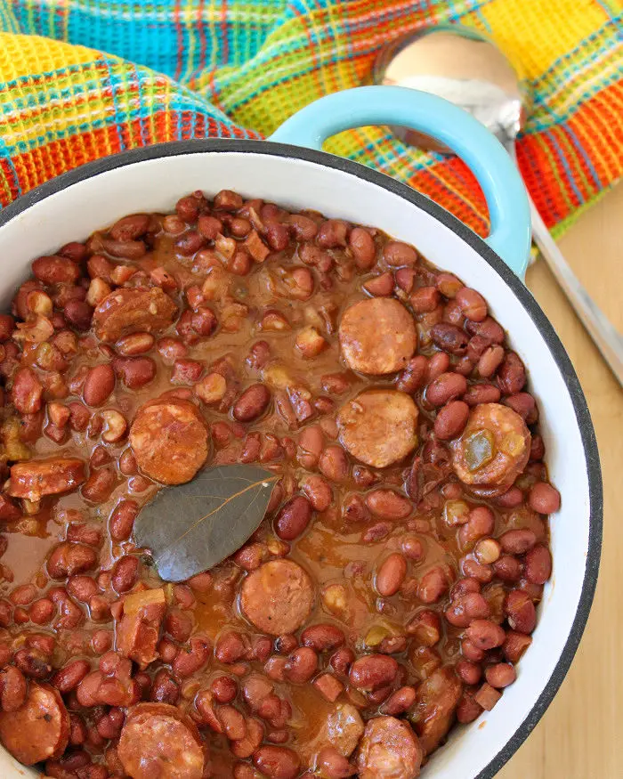

Cajun Red Beans and Rice

Authentic Taste of Lousiana
Authentic Cajun Red Beans with Rice are the Monday supper tradition in Louisiana. This Authentic Red beans with rice recipe will keep exceptionally well in the refrigerator and are just as good a couple of days later. Serve these incredible tasting Red Beans with Rice and homemade cornbread, and you have a fantastic meal.
If you are looking for Authentic recipes to make that are not only filling and hearty, this Authentic Cajun Red Beans won’t disappoint you one bit. The Cajun red beans are made with dried red beans, the holy trinity, smoked ham hocks, Andouille smoked sausage, Cajun seasonings, and white rice.
Ingredients
- Dried red beans
- Water or chicken stock
- Ham hocks
- Celery
- Yellow onions
- Green bell peppers
- Bay leaves
- White pepper
- Dried Thyme leaves
- Dried oregano
- Ground cayenne pepper
- Black pepper
- Kosher salt
- Andouille smoked sausage
- Whit rice
- Louisiana hot sauce optional
- Green Scallions optional
Directions
- Sort and rinse the red beans. Cover the beans with cold water about 2 inches above the beans. Let the beans soak overnight. Drain and rinse the beans under cold before cooking them.
- Place the ham hocks, 9 cups of water, celery, yellow onions, green bell peppers, bay leaves, and seasonings in a 6- quart sizeable Dutch oven; stir the mixture well. Cover the Dutch Oven with a tight-fitting lid and bring to a full boil over high heat. Remove the cover, reduce the heat, and simmer for 1 hour, stirring occasionally. Raise the heat and boil, occasionally stirring, until the meat is fork-tender, about 15 minutes.
- Remove the ham hocks from the Dutch Oven and set them to the side. (Shred the ham hocks while waiting)
- Add the drained and rinsed beans and 4 cups of the water to the Dutch Oven; bring to a boil, reduce heat, and simmer 30 minutes, stirring occasionally.
- Next, add two more cups of water and simmer for 30 minutes, stirring often. Add the sliced andouille sausage and continue simmering for about 25-35 minutes, Stirring the bottom of the Dutch oven to ensure the beans do not stick.
- Add the shredded ham hocks to the Dutch Oven and cook and stir for 10 minutes more.
- Serve over long-grain rice and add Louisiana hot sauce and green scallions for a little more kick.